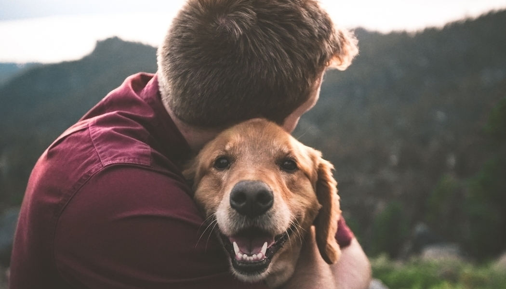
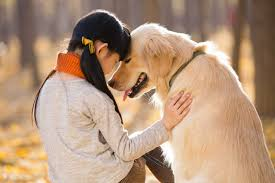

Adopting a dog,please take care of these things!!
You have been planning for months, maybe years to adopt a dog. You did your research on breeds, training, food, vet care. You are so ready for this. Or, maybe a homeless or needy pup found her way to you, totally unexpected. And you said, sure I can take her! I love dogs, how hard can it be? You rushed out and got her a bed, a bone, a bowl.

Now you’re home, it’s just your pup and her new family. The first days and weeks after bringing home a new dog can be a big adjustment and you might feel overwhelmed or out of your depth. I know I did when I brought my dog home. Here are some tips to get through those initial weeks with your sanity intact.
Forgive yourself.
You are worried you are going to make mistakes with your dog. You will. But, there are practically no mistakes which can’t be repaired. Download the ASPCA Animal Poison Control App and avoid highly intense or off-leash activities until you know your dog better (see #3 below), and you should be good. Animal companions are incredibly forgiving. That is one reason we are so drawn to them. If you get something wrong, you’ll know better next time and that is good enough. Give yourself permission to try things and you’ll learn from however it turns out.
Remember: this is just the beginning.Take it slow.
You have a dog now! There are so many fun dog-related activities to do! The dog park, puppy classes and training, hiking, eating al fresco at the local bistro, the beach, the park, the vet, hanging out with friends’ dogs, riding in the car. Hopefully you have years and years to experience all of these joys with your dog. For the first weeks, try to hold off as much as you can. If you adopted a puppy, the whole world is new to her. If you rescued a dog, think of the journey she went on to get to you. Help your dog feel grounded before introducing the extras. If you are able to do that, you and your dog will be more likely to have positive experiences with the fun stuff.
Get support.
Bringing a new animal companion into your home is a major adjustment. No matter how prepared you are, meeting the needs of a dependent creature means that there will be changes to your routines, finances, and even your other relationships. Stressful situations are always tougher alone. Get support to avoid feeling isolated. Ask friends with dogs in person or on social media about what those first days were like. Keep the lines of communication open with your partner and kids; you are all negotiating roles and responsibilities. Lean on friends and family to come and dog sit while you go out for a coffee or shopping. Hire a dog walker.
It has only been a week and already your dog has wormed his way into your heart and into your family. In some ways if feels like he’s always been there (for better or worse!). But you will look back in six months or a year and see how much things have changed and evolved. Especially with rescue dogs, it takes them time to recover from their journeys and to feel safe enough to be themselves. I encourage you, in those first weeks, to think of your adventure with your dog as a process which is just starting rather than one that has been completed with the adoption. You will figure this out.

Some final thoughts...
Try to keep a sense of humor and take lots of pictures! Try to imagine yourself in a comedy of errors or imagine looking back on the moments of chaos and ridiculousness. It will help to put things in perspective. I know it seems superfluous to mention taking pictures in this day and age, but don’t forget! The first days go by in a whir and you’ll want them to look back on.
Enjoy the ride and share in the comments about your first days with your dog!
What is Veterinary Social Work?
Veterinary social work is a subspecialty of social work which focuses on supporting the needs of the human side of relationships between people and animals. Veterinary social work recognizes that the human-animal bond is a meaningful part of the human experience. As such, it deserves the acceptance and study that the social work field gives to all the other aspects of the human experience.
Dr. Elizabeth Strand, director of the veterinary social work program at the University of Tennessee (UT), came up with the term “veterinary social work” and established the four main areas which comprise the field:
Animal Assisted Interventions
The Link Between Human and Animal Violence
Compassion Fatigue
Animal-Related Grief and Bereavement
See veterinary social work in action
Green Chimneys School is a therapeutic school in which animal-assisted interactions form the basis of healing for children with severe behavioral challenges.
People and Pets Living Safely (PALS) Project at the Urban Resource Institute is NYC’s first ever co-sheltering program which allows domestic violence survivors to live with their companion animals in shelter.
Compassion fatigue, also known as moral stress, vicarious trauma, secondary traumatic stress, or burnout, is of urgent concern in the veterinary community. Many veterinarians are suffering, and suicide in the v
The American Veterinary Medical Association is just one professional organization trying to tackle this problem, and veterinary social workers are part of the solution.
A growing number of veterinary hospitals across the country staff full time social workers to support their clients and staff in issues pertaining to companion animal loss, trauma, and decision making. Some hospitals and animal welfare groups run pet loss support groups so that grieving pet owners can combat some of the isolation that frequently follows the death of a pet.
My practice provides a space where animal lovers can feel that their priorities are valued. My other role is to help veterinary professionals cope with the stresses of their jobs in a world that does not.
Enjoy the ride and share in the comments about your first days with your dog!
What is Veterinary Social Work?
Veterinary social work is a subspecialty of social work which focuses on supporting the needs of the human side of relationships between people and animals. Veterinary social work recognizes that the human-animal bond is a meaningful part of the human experience. As such, it deserves the acceptance and study that the social work field gives to all the other aspects of the human experience.
Dr. Elizabeth Strand, director of the veterinary social work program at the University of Tennessee (UT), came up with the term “veterinary social work” and established the four main areas which comprise the field:
Animal Assisted Interventions
The Link Between Human and Animal Violence
Compassion Fatigue
Animal-Related Grief and Bereavement
See veterinary social work in action